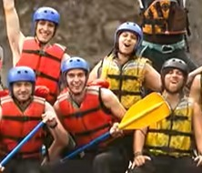
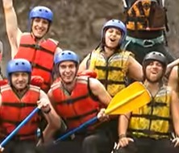
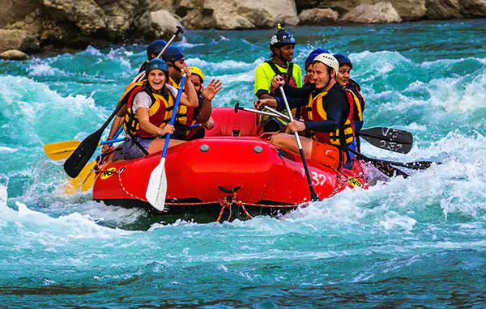

.
Enjoy the simple pleasures of life while getting wet. Bring a lunch and come enjoy the breathtaking views of the Rockies. It's "more than just an experience, it's a way of life!"

Enjoy the simple pleasures of life while getting wet. Bring a lunch and come enjoy the breathtaking views of the Rockies. It's "more than just an experience, it's a way of life!"
We were founded in 2025 with the goal to give people a safe and fun experience while enjoying the thrills of white water rafting. We pride ourselves on our top-of-the-line floatation devices, guaranteed to save you from drowning at least 97.5% of the time!
Our founder, Bob McBobson has been paddling the rapids of Alberta since he was 2 years old! A rafting prodigy from birth, his mother couldn't keep him away from the docks. Bob's ultimate goal is to share the joys of moisture with as many people as possible before he is inevitably absorbed by the sea, as we all shall be.